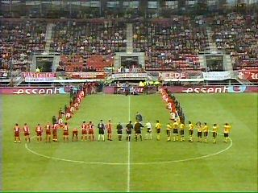
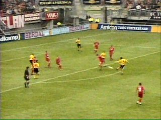
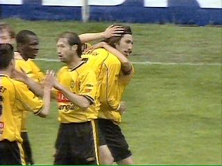
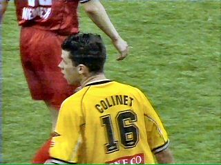
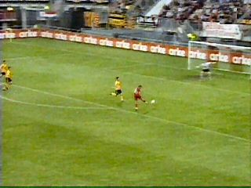
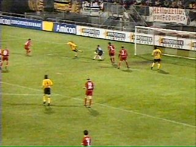
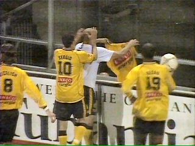

|
FC Twente - Roda JC (1-2) 1 mei 2004 |

Roda JC treedt aan tegen bekerfinalist FC Twente.

In de 12e min. scoort Vicelich met een droge
poeier 0-1.

De middenvelder hoort inmiddels tot een van de
topscorers bij Roda.

Colinet die de geschorste Van Dessel vervangt
krijgt al gauw een gele kaart.

In de 34e min. maakt Ramzi op aangeven van
Polak met een mooie volley de gelijkmaker.

Een foutje van Van de Weerden stelt Cristiano
in staat eindelijk te scoren: 1-2 (82').

Blij toont hij zijn shirtje aan de meegereisde
supporters.
Door deze winstpartij en door het verlies van
Heerenveen behoudt Roda een minieme kans op
Europees voetbal. Roda moet daarvoor twee
keer winnen en Heerenveen twee keer verliezen.
© Koempels
Pleasure Dome